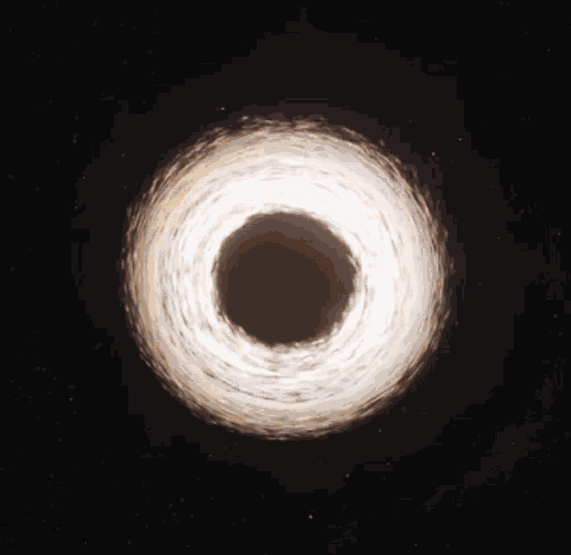

Physics is the study of everything that is around us. From celetial bodies such as the sun, planets, moons and galaxies to atoms, protons, neutrons and electrons. Everything from the size of the universe to subatomic quarks that make up everything that you and I see. With experimentation and study, humanity has come up with a number of laws, equations and principles that can explain why certain things just happen. We can predict the gravitational force between two objects, the force between two charges objects, the velocity and direction of two objects that hit each other, and the potential and kinetic energy of objects just to name a few. Physics is one of academia's oldest fields and with the inclusion of astronomy and astrophysics, perhaps the oldest. I intend to teach you, the reader, all of this and more by explaining the topic and giving you examples then by assigning you a quiz to complete.
You can click on the buttons that say "Einstein", "Feynman", "The Curies" and "Newton" to learn more about each of those physicists, their discoveries and their accomplishments. Right under that you can see all of the topics that is going to be covered on this website and on the final quiz. If you are wondering, the quiz is not going to include questions like "What year was Newton born?" but questions relating to what such people discovered/achieved in their lifetimes. For questions on physics topics, you will be questioned on substance and given examples and problems to calculate (while you can cheat and look at the pages that cover the topics to get the answer right but it will ultimately be at the expense of you're learning).